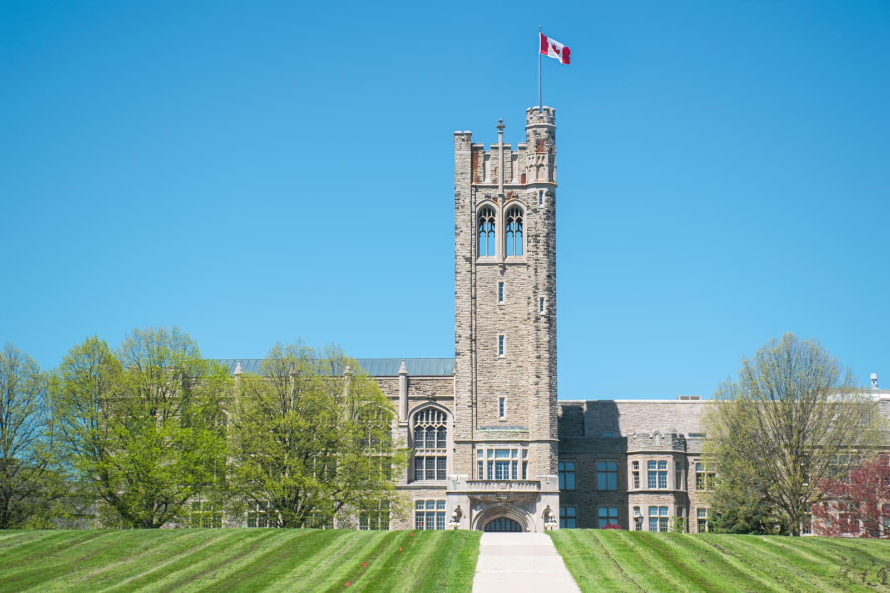

One of the most beautiful universities in Canada - Western University!
Established in 1878, Western is ranked number five on this list of most beautiful universities in Canada. In 2004, Western even beat out Banff National Park in the Canada Blooms competition in the Parks and Grounds category!
Originally the university was scattered around London. Then in 1918, the current campus property was purchased by Western from the Kingsmill family. University College was one of the first buildings constructed on campus in 1923. Another iconic building on the campus is Middlesex College. Stop by MC and get a drink at the Grad Club.
This website will give you a little introduction to the campus and our favourite building. If you have any questions about our amazing university, reach out to us at westernrocks@uwo.ca